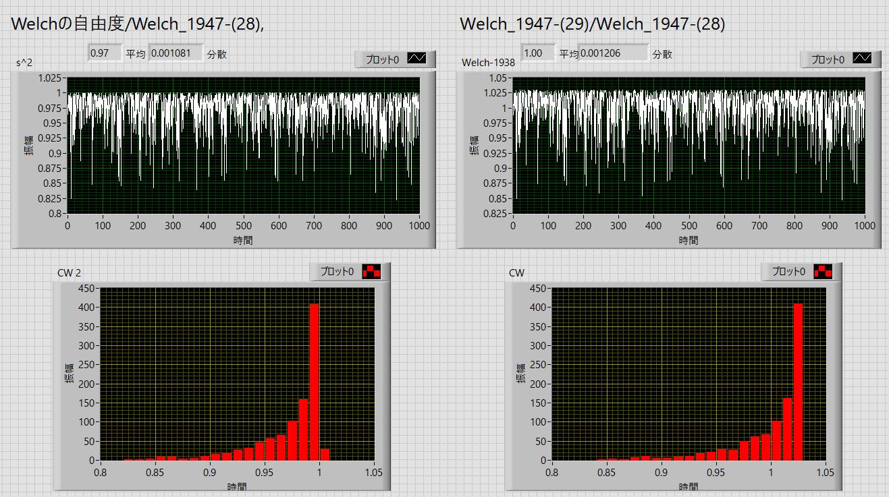
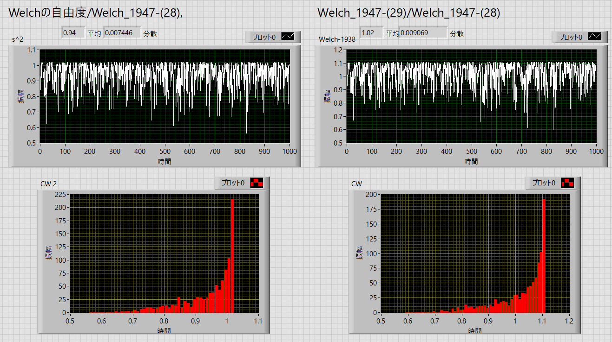

Welchの自由度の求め方-06
これらの式，
一般的なWelchの自由度
\(\Large \displaystyle
f = \frac{ \displaystyle \frac{s_X^2}{m}
+ \frac{ s_Y^2}{n} }
{ \displaystyle \frac{\left( \frac{ s_X^2}{m} \right)^2}{m-1}
+ \frac {\left( \frac{ s_Y^2}{n} \right)^2}{n-1} } \)
Welch_1947-(28)
\(\Large \displaystyle
f = \frac{ \displaystyle
\left( \frac{\sigma_1^2}{n_1} + \frac{\sigma_2^2}{n_2} \right)^2}
{ \displaystyle
\frac{\left( \frac{ \sigma_1^2}{n_1} \right)^2}{n_1 - 1} + \frac{\left( \frac{ \sigma_2^2}{n_2} \right)^2}{n_2 - 1}} \)
Welch_1947-(29)
\(\Large \displaystyle
f = \frac{ \left( \displaystyle
\frac{ s_1^2}{n_1} + \frac{ s_2^2}{n_2} \right)^2 - 2 \left( \displaystyle
\frac{ s_1^4 }{n_1^2 (n_1 +1)} + \frac{ s_2^4 }{n_2^2 (n_2 +1)} \right)}
{ \displaystyle
\frac{ s_1^4 }{n_1^2 (n_1 +1)} + \frac{ s_2^4 }{n_2^2 (n_2 +1)} } \)
の自由度の値を検討してみましょう．
方法は，
・二つの母集団を考える（母平均，母分散を指定）
・それぞれからある数をピックアップ（標本平均，標本分散が計算できる）
・Welch_1947-(28)，のみ母分散を使っているので，いつも値は一定，それ以外の二つの式は母分散が一定でないのでばらつく）
・これを複数回（今回は1,000回）繰り返して，推定される自由度を1,000回求めて，その平均，偏差を検討する
・今回は，一般的なWelchの自由度/Welch_1947-(28), Welch_1947-(29)/Welch_1947-(28)，という比を求める
です．
第1回：データ数がある程度多い場合
μ01= 5, sd01=3, n01=30
μ02= 8, sd02=4, n01=40
で行ってみました．

これから見ると，
Welchの自由度/Welch_1947-(28)：
最大の比が１，なので平均は1以下（0.97）
, Welch_1947-(29)/Welch_1947-(28)
最大の比が１以上，でも平均は1
となりました．
第2回：データ数が少ない場合
μ01= 5, sd01=3, n01=10
μ02= 8, sd02=4, n01=15
と少しデータ数を減らしてみました．

第1回の時と同じ傾向でしたが，ばらつきが大きくなりました．
結局，どれが一番正しかったのだろうか．．．．
残念ながらよくわかりません．
このWelchの検定の導出に関しては，ネット上ではほとんど記載がありませんでした．
今度図書館に行って調べてみます．
となると．．．現在の私個人の結論は，
Welchの検定も近似値なので，これがベストではないんじゃないか
一般のｔ検定でも十分じゃないか（母分散が等しい場合）
でも，発表するときはWelchの検定を使った方が風当たりが弱いかな？？？
という何とも言えず消極的な結論でした．